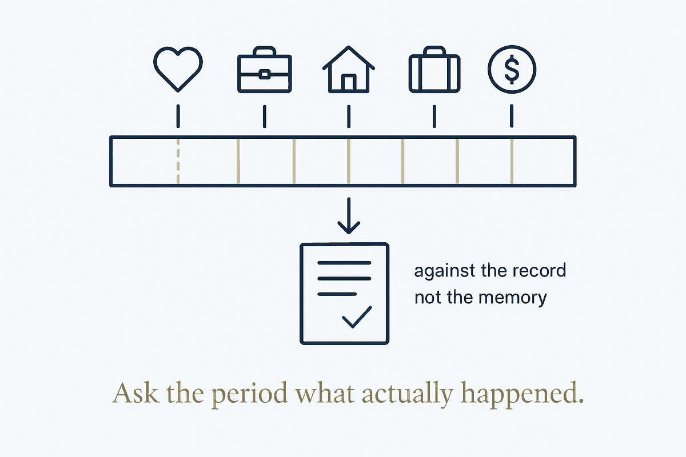

A debrief scaled up to a whole period of life — a periodic, cross-domain look at where you're actually heading, run against your data, not your memory of it.

You already debrief events — a project, a trip, a hard conversation: what happened, what you learned, what you'd change. The life debrief is that same move scaled up to a whole period of life. Not the annual box-tick of "did I hit my goals?", but the broader, on-a-schedule question of direction across every domain: health, work, relationships, money, learning. The value isn't the answers, it's the deliberate pause — a structured moment that forces the wide-angle view the day-to-day never permits. Left to chance, that view never happens; the urgent crowds it out, month after month, until a year has quietly gone somewhere you didn't choose.
The trap in every review is that it runs on memory, and memory is a liar with an agenda. Asked how the last quarter went, you recall the vivid and the recent — the one good week, the one bad argument — and confabulate a story that flatters the mood you're in. A review built on that is theatre. You confirm what you already felt and call it insight, which is the same failure a red team exists to catch: the mirror telling you you're fine.
The move that makes it honest is to run the review against your data, not your memory. A structured life keeps a record — the daily notes, the roll-ups from day to week to month, the transactions, the events, the derived facts nobody typed. So the review starts from what actually happened: not "I think I exercised more" but the count; not "money felt tight" but where it went; not "work took over" but the fraction of days it actually did. The record doesn't care how you feel about the quarter. That's exactly why it's worth reading.
And a review this way compounds, because it feeds back in. What the data shows becomes the next period's intention; what an intention was supposed to change becomes the next review's question. The audit stops being an event you dread and endure, and becomes the outer loop of a system that adjusts its own direction — the slow, deliberate counterpart to the fast experiment loop, asking not "did this block work?" but "is the whole thing still pointed where I meant it to go?"